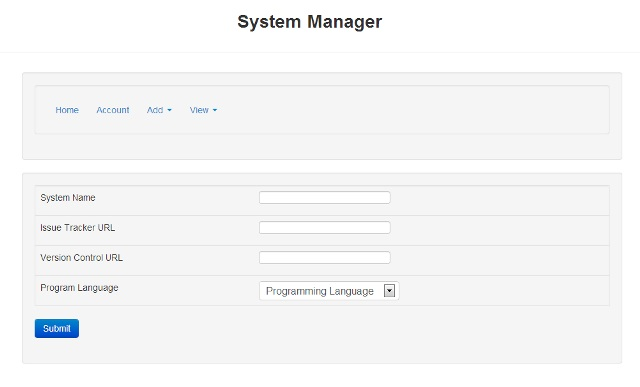
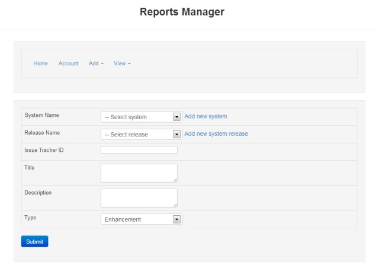

Software Solutions Issue and Bug Tracker
Home Page
Here is where the user(s) or the admin would be able to view the reports of the website with out logging in. But in order to see the add pages the user(s) and admin have to log-in to the site.

Systems
By Click the "Add New System" choice you would then be able to add a new or modified system to the repository. If you click views and choose the "Show Systems" link it will show you all of the systems that have been added to the repository.
Releases
By Click the "Add Release" choice you would then be able to add a new or modified release to the repository. If you click views and choose the "Show Releases" link it will show you all of the releases that have been added to the repository.

Reports
By Click the "Add Report" choice you would then be able to add a new or modified report to the repository. If you click views and choose the "Show Reports" link it will show you all of the reports that have been added to the repository.
Revisions
By Click the "Add Revision" choice you would then be able to add a new or modified revison to the repository. If you click views and choose the "Show Revisions" link it will show you all of the revisions that have been added to the repository.

Target Files
By Click the "Add Target File" choice you would then be able to add a new or modified target file to the repository. If you click views and choose the "Show Target Files" link it will show you all of the target files that have been added to the repository.

Target Changes
By Click the "Add Target Change" choice you would then be able to add a new or modified target change to the repository. If you click views and choose the "Show Target Changes" link it will show you all of the target changes that have been added to the repository.